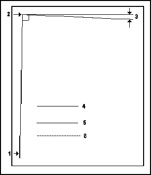

Troubleshooting HP1200 Printer Image Quality
Purpose
This document provides information for troubleshooting print quality issues.
Image Quality Issues
| General Area of Issue | Topics Contained in This Document |
|---|---|
| Background |
|
| Blank Page |
|
| Characters |
|
| Darkness / Lightness |
|
| Edge of Sheet |
|
| Paper Quality |
|
| Streaks
Smears |
|
| Smudges / Stains |
|
| Print not aligned with sheet |
|
Print Quality Checklist
Many printing quality issues can be resolved by performing all of the items listed on this checklist. If a printer has been located at an account for a long time, it can be useful to perform all of these tasks instead of focusing on any one issue.
| Check | Action |
|---|---|
| Redistribute the toner in the toner cartridge by gently rocking the toner from side to side. | |
| Clean the inside of the printer with a dry, lint-free cloth.
Caution: Do not touch the transfer roller (the black, spongy roller that sits beneath the toner cartridge). Skin oils could cause print-quality problems. Use the cleaning brush (if the printer has one) to clean the mirror; refer to the printer Users Guide for cleaning instructions.
|
|
| Check the paper type and quality. Try another ream of paper or try a different brand of paper. | |
| Adjust the print density setting. | |
| Confirm that EconoMode is off in the printer driver and the application that is being used. | |
| Install a new HP toner cartridge, and then check print quality again. |
Troubleshooting Printer Issues
| Print defect | Possible issue | Solution |
|---|---|---|
| No Image
Images will not print. |
The printer is not plugged in. | Confirm that the printer is plugged into a live wall outlet and that the power cord is not loose or defective. |
| The parallel cable is loose. | Check that the parallel cable is connected securely between the printer and the computer. | |
| Print missing near edges of the sheet
Parts of the page around the edges are not printing. |
The printer cannot print to the edge of the paper. | The printer margins on each edge are a minimum of 0.25 in. |
| If printing or copying, the reduction setting is set incorrectly. For printing, check the reduction setting in the Print or Setup window from within the program you are using. If the original image is too close to edge, then copies appear clipped. | To get the image to fit into this printable area, slightly reduce the size of the image. | |
| Too light
Copies or scanned images are too light or too dark. |
The contrast is not set correctly. | Adjust the contrast and resolution settings from the Document Assistant. |
| Printer needs calibration. | Calibrate the printer. | |
| The original image is very light or very dark. | Adjust the resolution or contrast setting from the toolbox on the Document Assistant. | |
| The scanned image is too light or too dark because the original was on a colored paper. | If the original was on colored paper, including brown recycled paper, the text might not be clear. Adjust the resolution, contrast, or brightness setting from the toolbox on the Document Assistant. | |
| Faded or unfaded print with vertical white streaks
Print is faded and a block of vertically aligned white streaks are on the page or Print is not faded and vertical white stripes are on the page. |
The toner cartridge is getting low on toner. | Redistribute the toner or replace the toner cartridge. |
| The printer needs cleaning. | Follow the standard "Cleaning Procedures" for the printer. | |
| The paper in use does not meet printer manufacturer's paper specifications (for example, it is too moist or too rough). | Confirm that the media meets specifications detailed in the media specifications guide. Refer to the HP LaserJet Printer Family Print Media Guide for more information. | |
| Toner density setting is not adjusted correctly. | Adjust the setting from the control panel. | |
| A part of the printer is damaged. | Follow the steps in Basic troubleshooting section of the user guide to isolate the problem. | |
| The internal mirror or optics is damaged. | Clean the mirror by blowing air through the laser/scanner to remove any dust particles. | |
| The formatter has a problem. | Replace the formatter. | |
| Stains or smudges
Stains or smudges appear as small, round, black dots on the front or back of a page. Sometimes inconsistent stains appear. |
The paper in use does not meet printer manufacturer's paper specifications (for example, it is too moist or too rough). | Confirm that the media meets specifications detailed in media specifications guide. Refer to the HP LaserJet Printer Family Print Media Guide for more information. |
| The wrong side of the paper is being used for printing. | Remove the paper from the paper input bin and turn it over. (The wrapper on many reams of paper has an arrow indicating the print side.) | |
| The printer needs cleaning. | See the user guide for instructions on cleaning the product and using a cleaning page. | |
| The toner cartridge is damaged. | Replace the toner cartridge if maintenance procedures do not improve print quality. | |
| Vertical black streaks
Vertically aligned black streaks or smears on successive pages. |
The printer needs cleaning. | Follow the cleaning procedures in user guide for this printer. |
| The toner cartridge is damaged. | Replace the toner cartridge if maintenance procedures do not improve print quality. | |
| The heating element has a problem. | Perform the steps for the heating element check in the product user guide. | |
| Horizontal black streaks
Horizontally aligned black streaks or smears. |
The toner cartridge was improperly installed. | Confirm that the entire length of the sealing tape was removed from the toner cartridge before it was installed. |
| The toner cartridge is defective. | Replace the toner cartridge. | |
| The printer needs cleaning. | Follow the "Cleaning procedures" in the user guide for this printer. | |
| Heating element has a problem. | Perform the "Heating element check" in the user guide for this printer. | |
| A gear is damaged. | Perform the "Drum rotation functional check" in the user guide for this printer. | |
| The printer needs cleaning. | Follow the "Cleaning procedures" in the user guide for this printer. | |
| Contact image sensor has a problem. | Replace the contact image sensor. | |
| A roller is damaged. | Use the Repetitive image defect ruler at the end of this document to determine which roller is damaged. Replace the roller. | |
| The printer needs cleaning. | Follow the "Cleaning procedures" in the user guide for this printer. Refer to the HP LaserJet Printer Family Print Media Guide for more information. | |
| If using transparencies, they do not meet printer manufacturer's specifications. | Confirm that the media meets specifications detailed in media specifications guide. Refer to the HP LaserJet Printer Family Print Media Guide for more information. | |
| The paper texture is too coarse. | Try changing to a paper with a smoother finish. | |
| The toner cartridge is damaged, causing a repetitive black flaw on every printout. | Replace the toner cartridge. | |
| The photosensitive drum on the toner cartridge has been overexposed to bright light, causing repetitive defects (usually a fuzzy black area). | Replace the toner cartridge. | |
| Void spaces within characters
Character voids (white areas within the parts of characters that should be solid black). |
The paper or transparencies do not meet printer manufacturer's specifications. | Confirm that the media meets specifications detailed in media specifications guide. Refer to the HP LaserJet Printer Family Print Media Guide for more information. |
| The wrong surface of the paper is being used for printing. | Remove the paper and turn it around. (The wrapper on many reams of paper has an arrow indicating the print side.) | |
| Poor fusing. | Check for wrap jam in fuser. | |
| Background scatter - Small spots in the background
Background scatter appears on page. |
Background scatter results from bits of toner distributed on the front or back of a printed page. Background scatter often is isolated to a specific area of the page. | Try changing the print density setting. If that does not work, change the paper type, weight, or surface finish. If background scatter occurs on an envelope, try moving the text to an area without seams. Printing on seams can cause this problem |
| Toner has spilled inside the product. | Follow the "Cleaning procedures" in the user guide for this printer. | |
| The pickup roller is dirty. | Follow the "Cleaning procedures" in the user guide for this printer. | |
| Black page
The page is completely black. |
The toner cartridge was improperly Installed. | Remove the cartridge and reinstall it. |
| The toner cartridge is defective. | Replace the toner cartridge. | |
| Discontinuity exists in the high-voltage contact points. | Perform the "High-voltage power supply check" steps in the user guide for this printer. | |
| Dropout of characters
Characters are only partially printed (also referred to as dropouts). |
A single sheet of paper is defective. | Try reprinting the job. |
| The print density needs adjusting. | Adjust the print density from the control panel. | |
| The moisture content of the paper is inconsistent or the paper has moist or wet spots on the surface. | Confirm that the media meets specifications detailed in media specifications guide. Refer to the HP LaserJet Printer Family Print Media Guide for more information. | |
| Inconsistent manufacturing processes damaged the paper. | Confirm that the media meets specifications detailed in media specifications guide. Refer to the HP LaserJet Printer Family Print Media Guide for more information. | |
| A "draft mode" or "economy mode" is selected in the software. | Try a "normal" or "best" setting. | |
| Blank bottom of page
The bottom of the printed page is blank or part of an image is cut off. |
The page is too complex (there is not enough memory to process the page). | Set the resolution to 300 dpi through the software or printer driver. See the online help for printer driver issues. |
| Blank pages print occasionally.
|
The printer is feeding two or more sheets of paper at a time because the paper is difficult to separate. | Remove the paper from the paper input bin and align the edges of the paper. Break the ream of paper by curving it into an upside-down u-shape. Try turning the paper around to feed the other end first, or use a different type of paper. |
| Page length and margins are not set correctly for the paper size. | If printing on small paper and the page is blank, try printing on larger paper to see where the image is printing. Adjust the margins accordingly. | |
| Pickup roller and separation pad are dirty. | Clean the pickup roller and the separation pad. If the problem persists, replace the separation pad or subpads. | |
| The software application is sending an extra page-eject command. | Check the software printing configuration information. If using a word-processing program, check for a natural page break and a forced page break that are close to each other. | |
| Blank pages print continually.
|
The toner cartridge was installed incorrectly. | Confirm that the entire length of sealing tape was removed from the toner cartridge before the cartridge was installed. |
| The toner cartridge is completely out of toner. | Replace the toner cartridge. | |
| Discontinuity exists in the high-voltage contact points. | Perform the "High-voltage power supply check" steps in the user guide for this product. | |
| Printer part has a problem. | Print a self-test page. If the page is blank, follow the steps in "Basic troubleshooting" in the user guide for this printer to isolate the problem. | |
| Print is only on the left side of the paper. The right side of the paper is blank. | The toner cartridge is not seated in the printer correctly causing the door that covers the drum to open partially. Remove and then reinstall the toner cartridge. Verify that the cartridge is aligned inside the unit. | |
| Print is misaligned on the page (skewed pages). | The paper input bin is overfilled. Remove some of the paper. | |
| The guides are adjusted incorrectly. | Be sure to center the paper with the paper guides. Also, verify that the paper guides are not adjusted too tightly or too loosely against the paper. | |
| The paper weight or surface finish does not meet specifications. | Confirm that the media meets specifications detailed in the media specifications guide. | |
| Toner smears
Toner smears on the leading edge of the paper. |
The paper guides are dirty. | Wipe off the paper guides with a lint-free cloth. |
| If toner is loose on the paper or can be wiped off easily, the fuser could be damaged. | Replace the fuser. |
Print Skew Specifications
Definition: The print is not straight with the paper edges.
| Category | |
|---|---|
| Skew - All vertical lines will be parallel to the reference, or left edge of the paper. | 2.0 mm over 250 mm length (0.8%) for cut sheet paper (except for A5 size)
3.3 mm over 220 mm length (1.5%) for envelopes, postcards and A5 size cut sheet paper 1.65 mm over 190 mm width (0.87%) for cut sheet paper (leading edge skew) |
| First line or leading edge skew -The distance of the first scan line from the leading edge. | 4.23 ±2.0 mm for cut sheet paper
4.23 ±2.5 mm for thick paper over 105 g/m² (28 lb) 15.0 ±3.5 mm for envelopes and postcards |
| Left margin - The distance of the left-most vertical line (first two dots of each scan line) from the left edge. | 4.23 ±2.0 mm for cut-sheet paper
15.0 ±3.5 mm for envelopes and postcards |
| Parallelism | All vertical lines must be parallel within an absolute value of 0.6% (1.5 mm over a 250 mm length for letter cut sheet paper) |

| 1 | Left Edge Skew (top) |
| 2 | Left Edge Skew (bottom) |
| 3 | Leading Edge Skew |
| 4 | Overlay with 90° corner |
| 5 | Paper Edge |
| 6 | Printed Line |
Correcting Skew
- Verify that the pickup roller is installed correctly.
- Adjust the paper guides to the width of the paper that is being printed and try reprinting.
- The paper input bin may be too full. Remove some of the paper.
- Verify that the paper meets specifications.
- Verify that the paper is cut straight.
- Verify that any preprinted forms have been printed correctly.
- Reseat the Mylar:
- Unplug the power cord from the printer.
- Remove the paper and paper input tray.
- Insert hands, palms side up, into the paper input tray cavity until the end of the cavity is felt.
- Bend fingers up to push the black Mylar light shields back into place. The black Mylar light shield should be positioned flat.
- Reconnect the power cord.
- Print a self-test or configuration page to verify the printer is functioning correctly.
Note: Use a fresh ream of paper or try using a different medium. Paper that is too heavy, too light, has curled leading edges, smooth or rough surfaces, or contains raised letterhead may not move freely along the paper path (or may move too freely - slipping along the paper path).
Troubleshooting Paper Quality Issues
- For best results, use conventional 75 g/m² (20 lb) paper.
- Make sure the paper is of good quality, and free of cuts, nicks, tears, spots, loose particles, dust, wrinkles, voids, and curled or bent edges.
- Check the label on the package of paper to see what type of paper is being used (such as bond or recycled).
- Some paper causes print quality problems, jamming, or damage to the printer.
| Symptom | Problem with Paper | Solution |
|---|---|---|
|
Poor print quality or toner adhesion. Problems with feeding. |
Too moist, too rough, too smooth, or embossed; faulty paper lot. |
Try another kind of paper, between 100 and 250 Sheffield, 4 to 6 percent moisture content. |
|
Dropouts, jamming, curl. |
Stored improperly. |
Store paper flat in its moisture-proof wrapping. |
|
Increased gray background shading. |
Might be too heavy. |
Use lighter paper. |
|
Excessive curl. Problems with feeding. |
Too moist, wrong grain direction or short-grain construction. |
Use long-grain paper. Print using the straight-through output path. |
|
Jamming, damage to printer. |
Cutouts or perforations. |
Do not use paper with cutouts or perforations. |
|
Problems with feeding. |
Ragged edges. |
Use good quality paper |